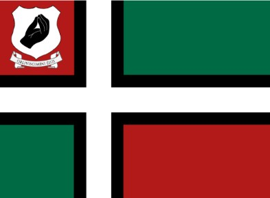

Welcome to Satriale
The Serene Republic of Satriale is a player-run nation on CivMC. Citizens collaborate to build infrastructure, trade, and create a thriving republic.
Explore our constitution, government offices, history, and join the community to participate in the growth of the nation.
